Inicio Sobre mí Recetas Contacto Otras cosas

Hola, bienvenid@ a mi blog, un espacio
donde quiero compartir mis recetas
vegetarianas y veganas favoritas...
Suscríbete a mi blog
Y consigue GRATIS mi eBook con 10
recetas exclusivas con superalimentos.
13 marzo, 2019

 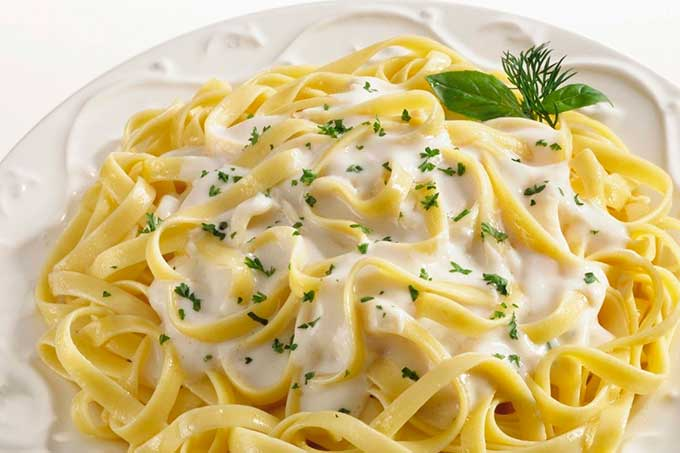
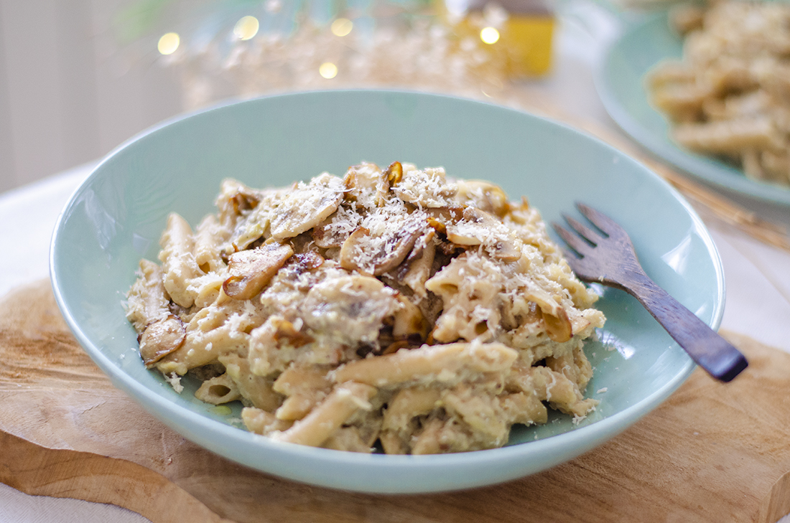
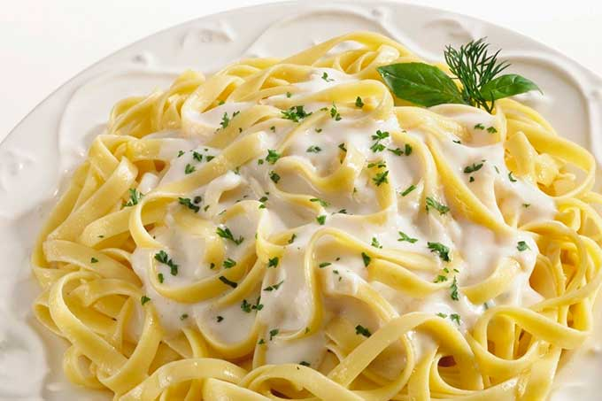
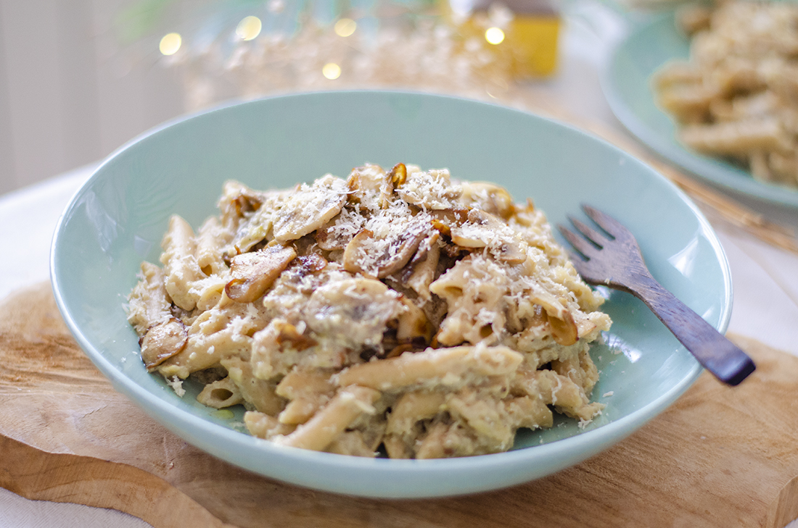
Una salsa vegana para la pasta, tan sabrosa y cremosa
que resulta irresistible! Está elaborada con coliflor
y con
otros ingredientes vegetales, que la convierten en…
12 febrero, 2019

 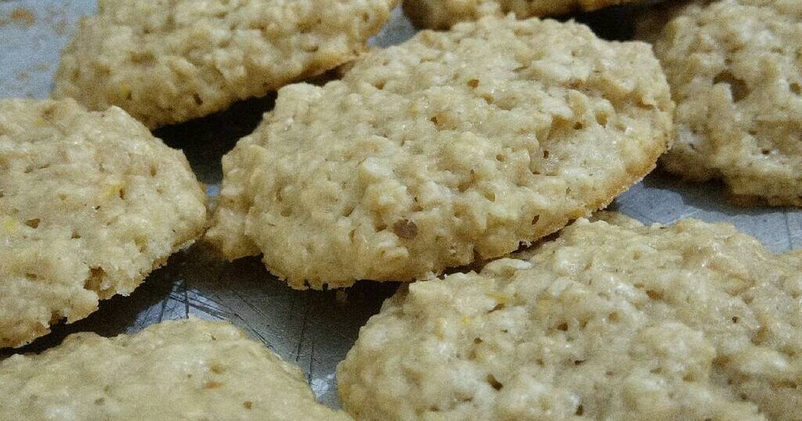
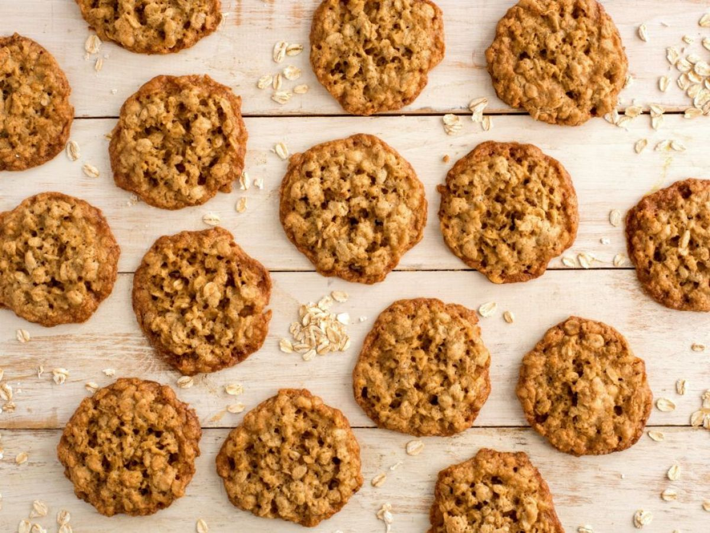
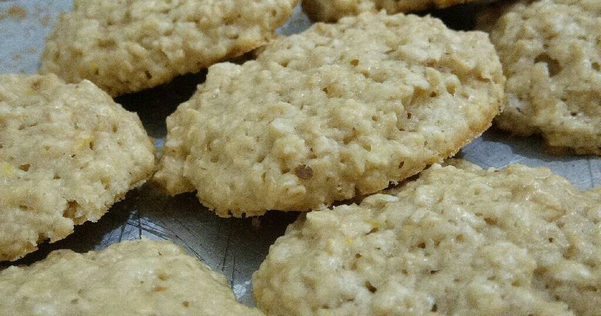
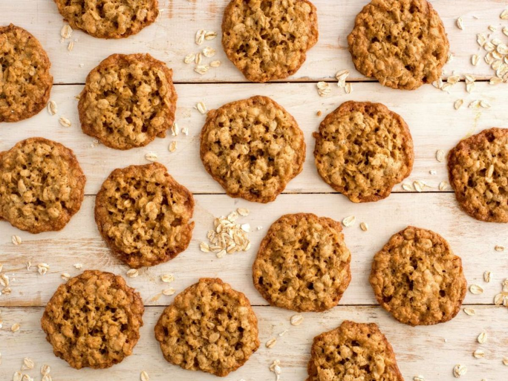
Galletitas para San Valentín? Estas galletas ricas y
crujientes, elaboradas con avena y con un rico sabor a
rosa y
lima son perfectas para celebrarlo!
1 febrero, 2019
 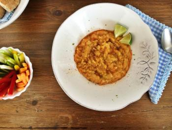
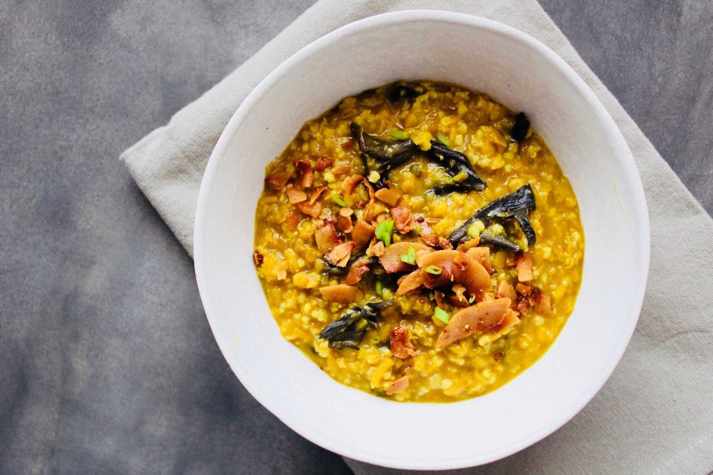
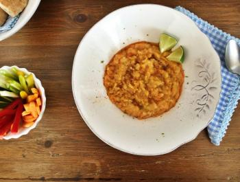
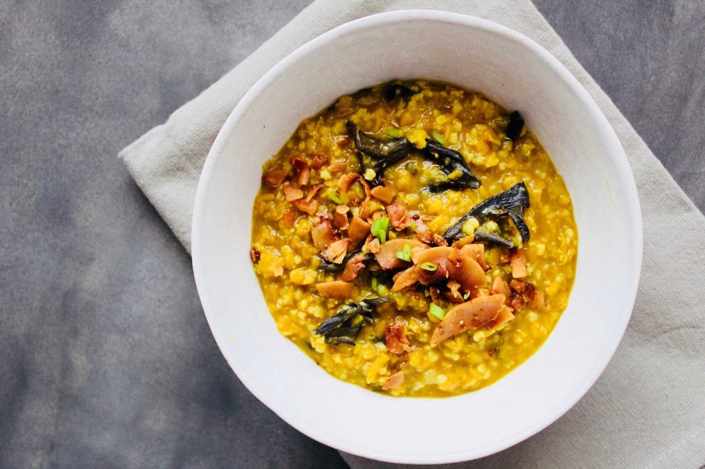
Un buen plato de mijo cremoso con lentejas y hortalizas
es todo lo que necesitas para templar
el cuerpo este
invierno! Delicioso y fácil!
18 diciembre, 2018
 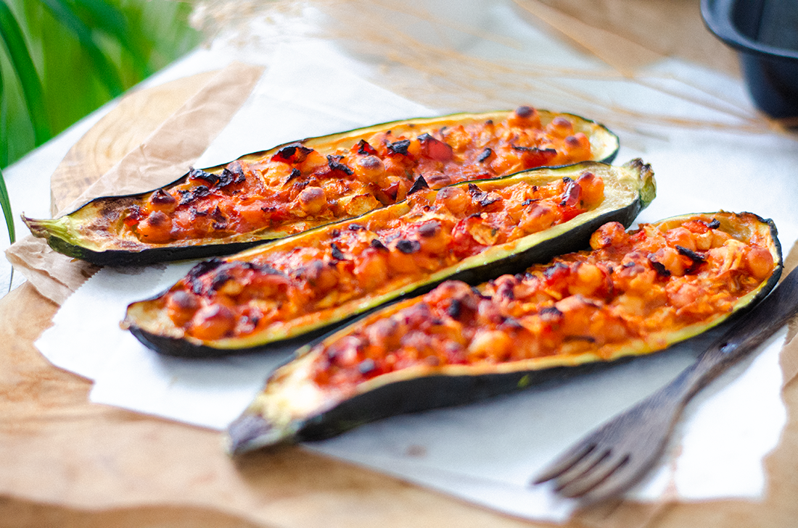
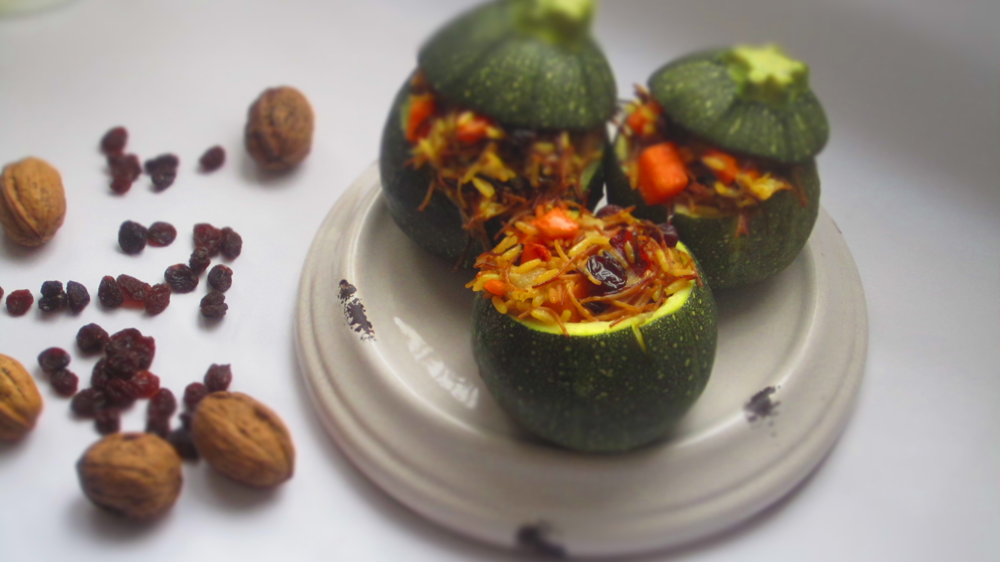
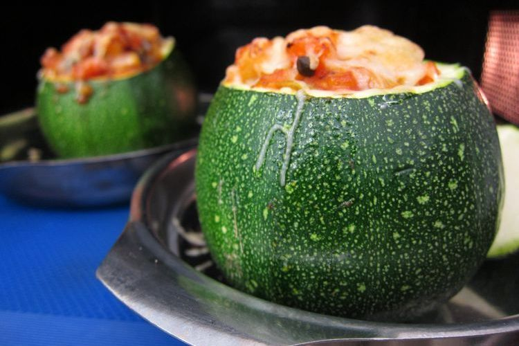
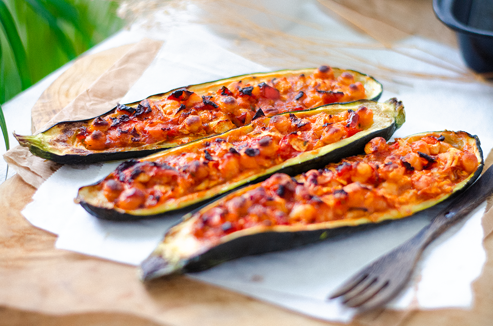
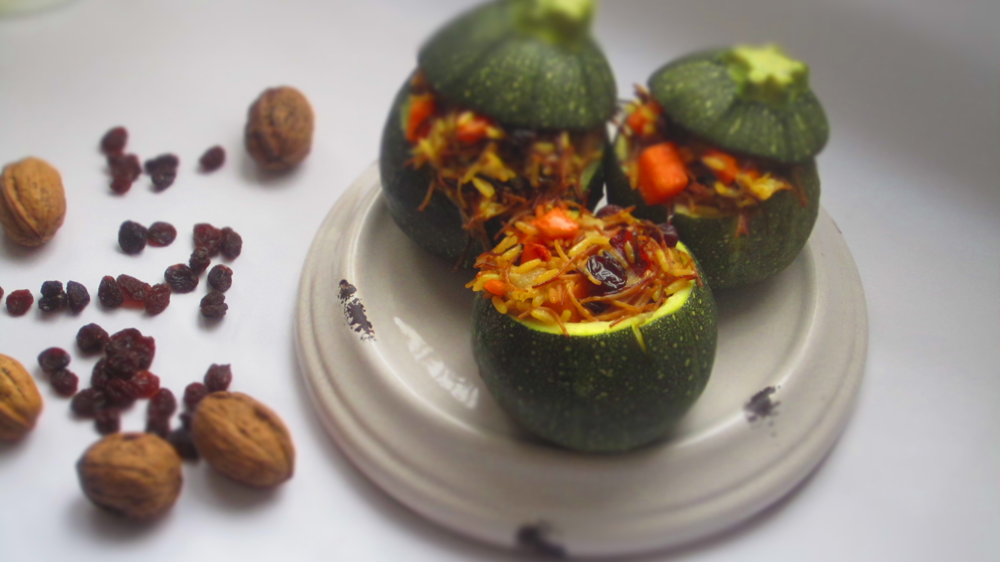
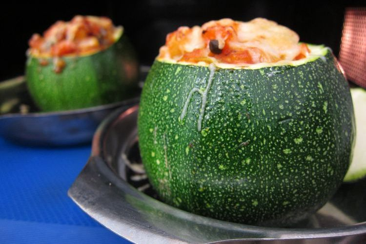
Estos calabacines rellenos de arroz negro y calabaza que
te propongo hoy, son la última receta
que publico en el
blog en…
Facebook Twitter Instagram Pinterest Email RRSS